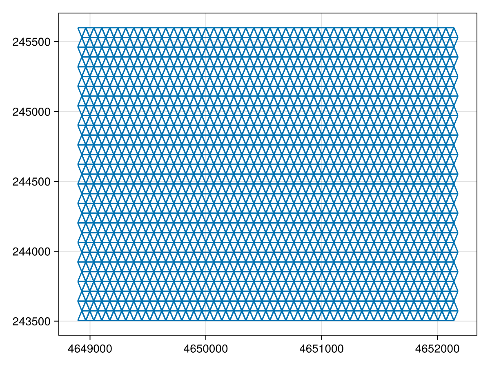
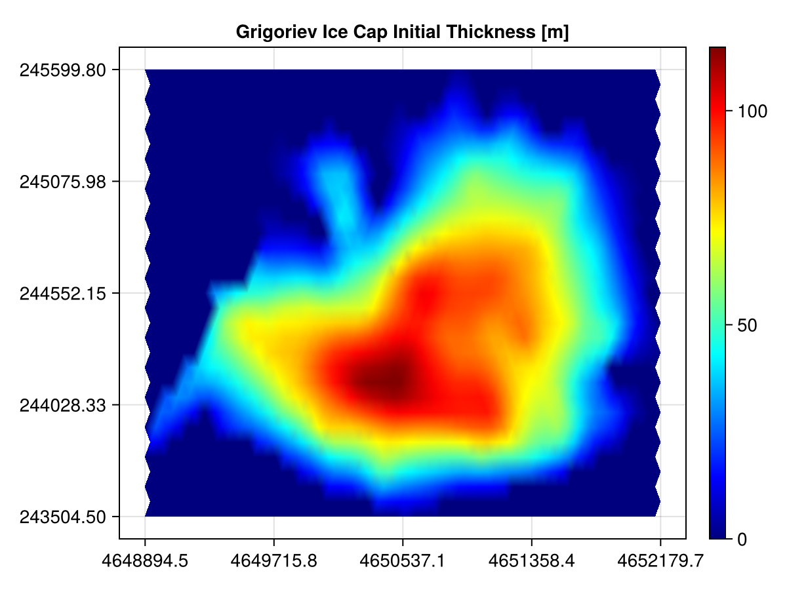
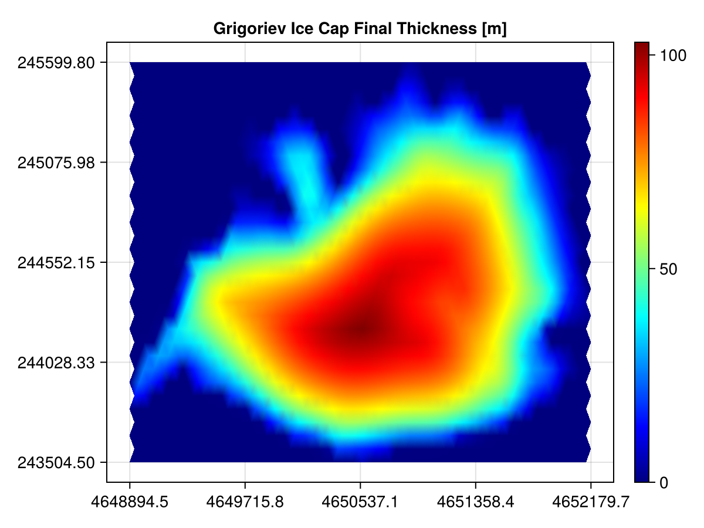

Halfar's model of glacial flow
Let's model glacial flow using a model of how ice height of a glacial sheet changes over time, from P. Halfar's 1981 paper: "On the dynamics of the ice sheets".
Let's run the Halfar shallow ice / shallow slope model on some "real world" data for ice thickness. Van Tricht et al. in their 2023 communication Measuring and modelling the ice thickness of the Grigoriev ice cap (Kyrgyzstan) and comparison with global dataset published ice thickness data on an ice cap and stored their data in a TIF. In this document, we will demonstrate how to parse such data and execute a Decapodes model on these initial conditions.
For the parameters to Glen's law, we will use those used in the Community Ice Sheet Model benchmark. Of course, the parameters of this Kyrgyzstani ice cap likely differ from these by quite some amount, but they are a good place to start. Further, this ice cap does not satisfy the "shallow slope" assumption across the entire domain.
# AlgebraicJulia Dependencies
using Catlab
using CombinatorialSpaces
using DiagrammaticEquations
using Decapodes
# External Dependencies
using CairoMakie
using ComponentArrays
using FileIO
using GeometryBasics: Point2
using Interpolations
using JLD2
using LinearAlgebra
using MLStyle
using OrdinaryDiffEq
using SparseArrays
Point2D = Point2{Float64}
Point3D = Point3{Float64};Loading a Scientific Dataset
The ice thickness data is stored in a TIF that can be downloaded here. We have downloaded it locally, and load it using basic FileIO.
file_name = "Icethickness_Grigoriev_ice_cap_2021.tif"
ice_thickness_tif = load(file_name)This data may visually appear to be a binary mask but that is only because values with no ice are set to -Inf. We will account for this when interpolate our data.
We use the Interpolations.jl library to interpolate this dataset:
# Taking the coordinates to be from the extrema of the measured points:
const MIN_X = 4648894.5
const MAX_X = 4652179.7
const MIN_Y = 243504.5
const MAX_Y = 245599.8
ice_coords = (range(MIN_X, MAX_X, length=size(ice_thickness_tif,1)),
range(MIN_Y, MAX_Y, length=size(ice_thickness_tif,2)))
# Note that the TIF is set to -floatmax(Float32) where there is no ice.
# For our purposes, this is equivalent to 0.0.
ice_interp = LinearInterpolation(ice_coords, Float32.(ice_thickness_tif))171×113 extrapolate(scale(interpolate(::Matrix{Float32}, BSpline(Linear())), (4.6488945e6:19.32470588235404:4.6521797e6, 243504.5:18.708035714285714:245599.8)), Throw()) with element type Float32:
-3.40282e38 -3.40282e38 -3.40282e38 … -3.40282e38 -3.40282e38
-3.40282e38 -3.40282e38 -3.40282e38 -3.40282e38 -3.40282e38
-3.40282e38 -3.40282e38 -3.40282e38 -3.40282e38 -3.40282e38
-3.40282e38 -3.40282e38 -3.40282e38 -3.40282e38 -3.40282e38
-3.40282e38 -3.40282e38 -3.40282e38 -3.40282e38 -3.40282e38
-3.40282e38 -3.40282e38 -3.40282e38 … -3.40282e38 -3.40282e38
-3.40282e38 -3.40282e38 -3.40282e38 -3.40282e38 -3.40282e38
-3.40282e38 -3.40282e38 -3.40282e38 -3.40282e38 -3.40282e38
-3.40282e38 -3.40282e38 -3.40282e38 -3.40282e38 -3.40282e38
-3.40282e38 -3.40282e38 -3.40282e38 -3.40282e38 -3.40282e38
⋮ ⋱
-3.40282e38 -3.40282e38 -3.40282e38 -3.40282e38 -3.40282e38
-3.40282e38 -3.40282e38 -3.40282e38 -3.40282e38 -3.40282e38
-3.40282e38 -3.40282e38 -3.40282e38 -3.40282e38 -3.40282e38
-3.40282e38 -3.40282e38 -3.40282e38 … -3.40282e38 -3.40282e38
-3.40282e38 -3.40282e38 -3.40282e38 -3.40282e38 -3.40282e38
-3.40282e38 -3.40282e38 -3.40282e38 -3.40282e38 -3.40282e38
-3.40282e38 -3.40282e38 -3.40282e38 -3.40282e38 -3.40282e38
-3.40282e38 -3.40282e38 -3.40282e38 -3.40282e38 -3.40282e38
-3.40282e38 -3.40282e38 -3.40282e38 … -3.40282e38 -3.40282e38To use this interpolating object ice_interp, we can simply query it for the value at some coordinates: ice_interp(x,y).
Let's generate a triangulated grid located at the appropriate coordinates:
# Specify a resolution:
RES_Y = (MAX_Y-MIN_Y)/30.0
RES_X = RES_Y
# Generate the mesh with appropriate dimensions and resolution:
s = triangulated_grid(MAX_X-MIN_X, MAX_Y-MIN_Y, RES_X, RES_Y, Point3D)
# Shift it into place:
s[:point] = map(x -> x + Point3D(MIN_X, MIN_Y, 0), s[:point])
sd = EmbeddedDeltaDualComplex2D{Bool, Float64, Point3D}(s)
subdivide_duals!(sd, Barycenter())
fig = Figure()
ax = CairoMakie.Axis(fig[1,1])
wf = wireframe!(ax, s)
save("Grigoriev_IceMesh.png", fig)
The coordinates of a vertex are stored in sd[:point]. Let's use our interpolator to assign ice thickness values to each vertex in the mesh:
# These are the values used by the CISM benchmark:
n = 3
ρ = 910
g = 9.8101
A = fill(1e-16, ne(sd))
h₀ = map(sd[:point]) do (x,y,_)
tif_val = ice_interp(x,y)
# Accommodate for the -∞'s that encode "no ice".
tif_val < 0.0 ? 0.0 : tif_val
end
# Store these values to be passed to the solver.
u₀ = ComponentArray(h=h₀, stress_A=A)
constants_and_parameters = (n = n,
stress_ρ = ρ,
stress_g = g,
stress_A = A)Defining and Composing Models
For exposition on this Halfar Decapode, see our Glacial Flow docs page. Otherwise, you may skip ahead to the next section.
halfar_eq2 = @decapode begin
h::Form0
Γ::Form1
n::Constant
ḣ == ∂ₜ(h)
ḣ == ∘(⋆, d, ⋆)(Γ * d(h) * avg₀₁(mag(♯(d(h)))^(n-1)) * avg₀₁(h^(n+2)))
end
glens_law = @decapode begin
Γ::Form1
(A,ρ,g,n)::Constant
Γ == (2/(n+2))*A*(ρ*g)^n
end
ice_dynamics_composition_diagram = @relation () begin
dynamics(h,Γ,n)
stress(Γ,n)
end
ice_dynamics_cospan = oapply(ice_dynamics_composition_diagram,
[Open(halfar_eq2, [:h,:Γ,:n]),
Open(glens_law, [:Γ,:n])])
ice_dynamics = apex(ice_dynamics_cospan)
to_graphviz(ice_dynamics)
Define our functions
function generate(sd, my_symbol; hodge=GeometricHodge())
op = @match my_symbol begin
:mag => x -> norm.(x)
:♯ => begin
sharp_mat = ♯_mat(sd, AltPPSharp())
x -> sharp_mat * x
end
x => error("Unmatched operator $my_symbol")
end
return op
endgenerate (generic function with 1 method)Generate simulation
sim = eval(gensim(ice_dynamics, dimension=2))
fₘ = sim(sd, generate)(::Main.var"#f#14"{PreallocationTools.FixedSizeDiffCache{Vector{Float64}, Vector{ForwardDiff.Dual{nothing, Float64, 12}}}, PreallocationTools.FixedSizeDiffCache{Vector{Float64}, Vector{ForwardDiff.Dual{nothing, Float64, 12}}}, PreallocationTools.FixedSizeDiffCache{Vector{Float64}, Vector{ForwardDiff.Dual{nothing, Float64, 12}}}, PreallocationTools.FixedSizeDiffCache{Vector{Float64}, Vector{ForwardDiff.Dual{nothing, Float64, 12}}}, SparseArrays.SparseMatrixCSC{Float64, Int32}, SparseArrays.SparseMatrixCSC{Int8, Int32}, Main.var"#6#8", Decapodes.var"#37#38"{SparseArrays.SparseMatrixCSC{Float64, Int32}}, Main.var"#7#9"{SparseArrays.SparseMatrixCSC{GeometryBasics.Point{3, Float64}, Int64}}}) (generic function with 1 method)Run
tₑ = 10
@info("Solving Grigoriev Ice Cap")
prob = ODEProblem(fₘ, u₀, (0, tₑ), constants_and_parameters)
soln = solve(prob, Tsit5())
@show soln.retcode
@info("Done")
@save "grigoriev.jld2" soln[ Info: Solving Grigoriev Ice Cap
soln.retcode = SciMLBase.ReturnCode.Success
[ Info: Done
┌ Warning: Attempting to store Main.var"#6#8".
│ JLD2 only stores functions by name.
│ This may not be useful for anonymous functions.
└ @ JLD2 ~/.julia/packages/JLD2/NKGUi/src/data/writing_datatypes.jl:447
┌ Warning: Attempting to store Decapodes.var"#37#38"{SparseArrays.SparseMatrixCSC{Float64, Int32}}.
│ JLD2 only stores functions by name.
│ This may not be useful for anonymous functions.
└ @ JLD2 ~/.julia/packages/JLD2/NKGUi/src/data/writing_datatypes.jl:447
┌ Warning: Attempting to store Main.var"#7#9"{SparseArrays.SparseMatrixCSC{GeometryBasics.Point{3, Float64}, Int64}}.
│ JLD2 only stores functions by name.
│ This may not be useful for anonymous functions.
└ @ JLD2 ~/.julia/packages/JLD2/NKGUi/src/data/writing_datatypes.jl:447
┌ Warning: Attempting to store Main.var"#f#14"{PreallocationTools.FixedSizeDiffCache{Vector{Float64}, Vector{ForwardDiff.Dual{nothing, Float64, 12}}}, PreallocationTools.FixedSizeDiffCache{Vector{Float64}, Vector{ForwardDiff.Dual{nothing, Float64, 12}}}, PreallocationTools.FixedSizeDiffCache{Vector{Float64}, Vector{ForwardDiff.Dual{nothing, Float64, 12}}}, PreallocationTools.FixedSizeDiffCache{Vector{Float64}, Vector{ForwardDiff.Dual{nothing, Float64, 12}}}, SparseArrays.SparseMatrixCSC{Float64, Int32}, SparseArrays.SparseMatrixCSC{Int8, Int32}, Main.var"#6#8", Decapodes.var"#37#38"{SparseArrays.SparseMatrixCSC{Float64, Int32}}, Main.var"#7#9"{SparseArrays.SparseMatrixCSC{GeometryBasics.Point{3, Float64}, Int64}}}.
│ JLD2 only stores functions by name.
│ This may not be useful for anonymous functions.
└ @ JLD2 ~/.julia/packages/JLD2/NKGUi/src/data/writing_datatypes.jl:447
┌ Warning: Attempting to store Main.var"#6#8".
│ JLD2 only stores functions by name.
│ This may not be useful for anonymous functions.
└ @ JLD2 ~/.julia/packages/JLD2/NKGUi/src/data/writing_datatypes.jl:447
┌ Warning: Attempting to store SciMLBase.ODEFunction{true, SciMLBase.AutoSpecialize, Main.var"#f#14"{PreallocationTools.FixedSizeDiffCache{Vector{Float64}, Vector{ForwardDiff.Dual{nothing, Float64, 12}}}, PreallocationTools.FixedSizeDiffCache{Vector{Float64}, Vector{ForwardDiff.Dual{nothing, Float64, 12}}}, PreallocationTools.FixedSizeDiffCache{Vector{Float64}, Vector{ForwardDiff.Dual{nothing, Float64, 12}}}, PreallocationTools.FixedSizeDiffCache{Vector{Float64}, Vector{ForwardDiff.Dual{nothing, Float64, 12}}}, SparseArrays.SparseMatrixCSC{Float64, Int32}, SparseArrays.SparseMatrixCSC{Int8, Int32}, Main.var"#6#8", Decapodes.var"#37#38"{SparseArrays.SparseMatrixCSC{Float64, Int32}}, Main.var"#7#9"{SparseArrays.SparseMatrixCSC{GeometryBasics.Point{3, Float64}, Int64}}}, LinearAlgebra.UniformScaling{Bool}, Nothing, Nothing, Nothing, Nothing, Nothing, Nothing, Nothing, Nothing, Nothing, Nothing, Nothing, typeof(SciMLBase.DEFAULT_OBSERVED), Nothing, Nothing, Nothing, Nothing}.
│ JLD2 only stores functions by name.
│ This may not be useful for anonymous functions.
└ @ JLD2 ~/.julia/packages/JLD2/NKGUi/src/data/writing_datatypes.jl:447Results and Discussion
We observe the usual Halfar model phenomena of ice "melting". Note that since the "shallow slope" approximation does not hold on the boundaries (due to the so-called "ice cliffs" described in the Van Tricht et al. paper), we do not expect the "creep" effect to be physical in this region of the domain. Rather, the Halfar model's predictive power is tuned for the interiors of ice caps and glaciers. Note that we also assume here that the bedrock that the ice rests on is flat. We may in further documents demonstrate how to use topographic data from Digital Elevation Models to inform the elevation of points in the mesh itself.



[ Info: Page built in 39 seconds.
[ Info: This page was last built at 2024-12-11T19:19:07.822.